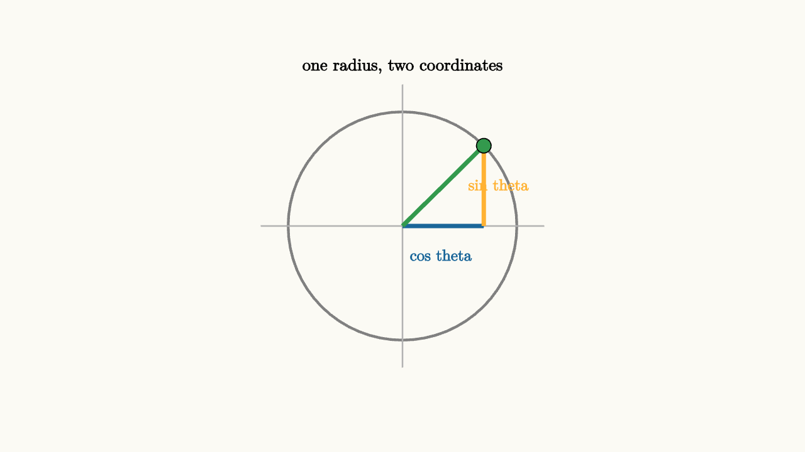

Identities Are Coordinate Changes
An identity is an equation that stays true for every allowed input. That can make identities feel like magic phrases. In trigonometry, they are usually coordinate changes. The same point, rotation, or triangle is being described in two languages.
The most important one begins with the unit circle. A point at angle $\theta$ has coordinates
Because the point sits on a circle of radius $1$, its distance from the origin satisfies
So
That identity is the Pythagorean theorem written for a moving point.

source
background = [0.985, 0.98, 0.955, 1]
camera = Camera(4.4b)
let theta = 0.78
let p = [1.25 * cos(theta), 1.25 * sin(theta), 0]
mesh diagram = block {
. fill{CLEAR} stroke{GRAY, 2.5} Circle(1.25)
. stroke{LIGHT_GRAY, 1.4} Line(start: [-1.55, 0, 0], end: [1.55, 0, 0])
. stroke{LIGHT_GRAY, 1.4} Line(start: [0, -1.55, 0], end: [0, 1.55, 0])
. stroke{BLUE, 4} Line(start: [0, 0, 0], end: [p[0], 0, 0])
. stroke{ORANGE, 4} Line(start: [p[0], 0, 0], end: p)
. stroke{GREEN, 4} Line(start: [0, 0, 0], end: p)
. fill{GREEN} center{p} Circle(0.08)
. center{[0.42, -0.32, 0]} color{BLUE} Text("cos theta", 0.62)
. center{[1.05, 0.45, 0]} color{ORANGE} Text("sin theta", 0.62)
. center{[0, 1.75, 0]} color{BLACK} Text("one radius, two coordinates", 0.66)
}The identity tells you how one coordinate limits the other. If $\sin\theta$ is near $1$, then $\cos\theta$ must be near $0$. If $\cos\theta$ is negative, its square still contributes positive distance. The equation records a geometric budget.
This budget is more useful than memorization. Suppose you know
and the angle is in quadrant II. The identity gives
So $|\cos\theta|=\frac45$. The quadrant supplies the sign, so
The identity gave the length, and the circle gave the sign. That is a healthier habit than treating the square root as a final answer.
Angle-sum identities have the same flavor. The point at angle $a+b$ can be reached by rotating through $a$, then rotating through $b$. A rotation by $b$ sends a vector $(x,y)$ to
Start with the point at angle $a$:
After rotating by $b$, the new $x$-coordinate is
That same point is also the point at angle $a+b$, whose $x$-coordinate is $\cos(a+b)$. Therefore
The identity is a coordinate receipt for a two-step rotation.
source
background = [0.985, 0.98, 0.955, 1]
camera = Camera(4.6b)
let PointAt = |angle| [1.2 * cos(angle), 1.2 * sin(angle), 0]
let RotationScene = |a, b, show_sum| block {
let p = PointAt(a)
let q = PointAt(a + b)
. fill{CLEAR} stroke{GRAY, 2.3} Circle(1.2)
. stroke{LIGHT_GRAY, 1.2} Line(start: [-1.55, 0, 0], end: [1.55, 0, 0])
. stroke{LIGHT_GRAY, 1.2} Line(start: [0, -1.55, 0], end: [0, 1.55, 0])
. stroke{BLUE, 4} Arrow(start: [0, 0, 0], end: p)
. fill{BLUE} center{p} Circle(0.08)
if (show_sum) {
. stroke{ORANGE, 4} Arrow(start: [0, 0, 0], end: q)
. fill{ORANGE} center{q} Circle(0.08)
. stroke{GREEN, 3} Arc(0.82, a, a + b)
. center{[0, 1.65, 0]} color{BLACK} Text("rotate the coordinates by b", 0.64)
} else {
. center{[0, 1.65, 0]} color{BLACK} Text("start at angle a", 0.7)
}
}
"angle a"
mesh scene = RotationScene(a: 0.55, b: 0.0, show_sum: 0)
play Write(0.8)
"add b"
scene = RotationScene(a: 0.55, b: 0.72, show_sum: 1)
play Trans(1.1)
"same final point"
scene = block {
. RotationScene(a: 0.55, b: 0.72, show_sum: 1)
. center{[0, -1.75, 0]} color{BLACK} Text("cos(a + b) is the final x-coordinate", 0.62)
}
play Fade(0.7)This view also explains why identities help solve equations. Suppose
Using $\sin^2\theta=1-\cos^2\theta$ changes everything into the coordinate $\cos\theta$:
Now subtract $1$:
Then
Factor:
So $\cos\theta=0$ or $\cos\theta=1$. The identity allowed the equation to speak in one coordinate. The unit circle then translates those coordinate statements into angles.
That is the main habit. An identity is often a change of coordinates chosen to expose the structure of a problem. Pythagorean identities trade sine for cosine. Angle-sum identities trade one combined angle for two simpler rotations. Double-angle identities trade a fast rotation for squared coordinates:
Each version is useful in a different moment. The point on the circle stays the same. The coordinate language changes to make a relationship visible.
The tangent identities are also coordinate changes. Tangent is the slope of the radius through the unit-circle point:
when $\cos\theta\ne 0$. The identity
comes from dividing
by $\cos^2\theta$. The geometry changed from coordinates on the circle to slope and reciprocal horizontal coordinate. The domain condition changed too, because dividing by $\cos^2\theta$ requires $\cos\theta\ne 0$.
That domain detail matters in equation solving. If a trig equation is transformed by dividing by $\cos\theta$, the angles where $\cos\theta=0$ need separate attention. If an identity introduces tangent, the points where tangent is undefined must be kept out of the statement. Identities are safe when their domains are respected.
A good way to study a new identity is to ask three questions:
1. What geometric object is staying the same? 2. Which coordinate language is being used before and after? 3. Which inputs are allowed in both descriptions?
For the Pythagorean identity, the object is a unit-radius point. For the angle-sum identity, the object is the final point after two rotations. For reciprocal and quotient identities, the object is still the same point, but the language changes from coordinates to ratios. Once that habit is built, identities become tools for choosing a useful view.